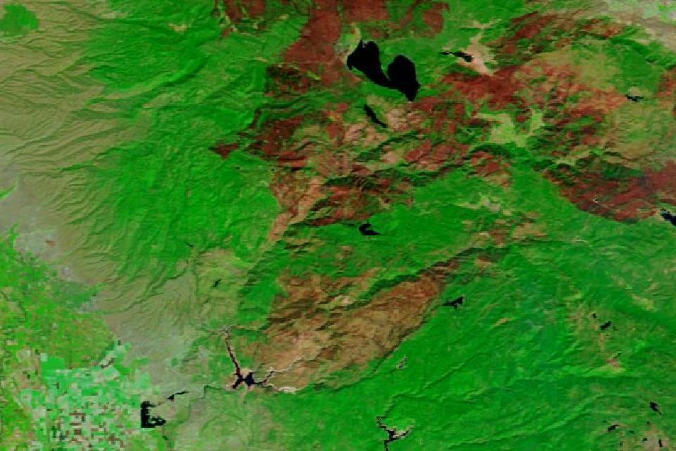

Satellite imagery comparison
NASA MODIS · Terra
Compare observations from three events by date and image type. Drag the divider to reveal each image.

Zoom with the buttons or scroll; hold Shift and drag to pan.
Each pair uses the same geographic extent and image type. Dates are selected observations, not a continuous sequence; a later image may show an event still in progress.
Clouds, smoke, seasonal conditions and lighting can change appearances. These rendered images are not measurements of damage or change.